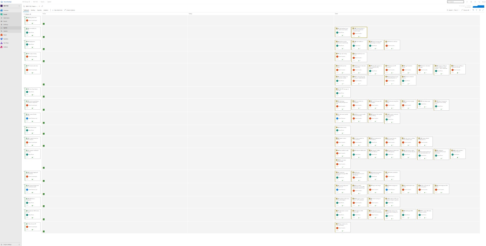
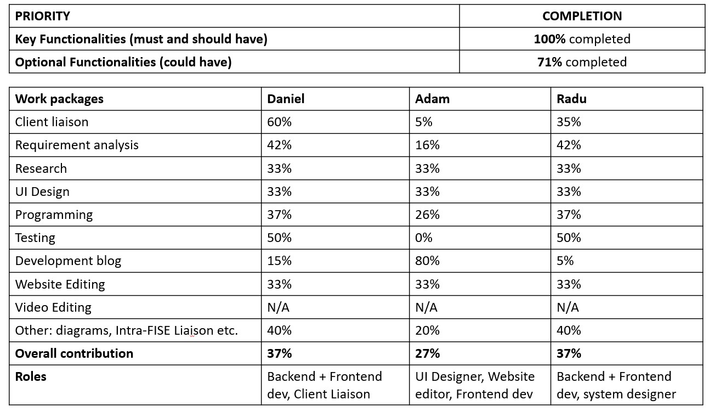

Bug List
Our team utilised Azure DevOps to address and keep track of bug work items.
When we encountered a bug we created a new issue inside our bug work item.
Upon completion, we are proud to say that we have no known bugs. Below you see
(albeit very zoomed out) an example of all work items in one of our sprints.

Achievements - MoSCoW table

Achievements - Individual Contribution table & MoSCoW completion
{kind=link}
Critical Evaluation of the project
User Interface and Experience
Our user interface has been designed based on gerontological studies [1] on web accessibility for the elderly. This has meant that we have followed a strict set of design principles such as avoiding certain colours, using simple icons, having a minimal amount of text, maintaining a low-level information hierarchy etc. We firmly believe that this has yielded a better experience for our users (mostly elderly in shielding) compared to similar platforms that already exist. Furthermore, our choice to include VR 360 image backgrounds enables users to feel more immersed in the platform, however, we also recognize that some users might not want that, hence the choice to select between VR and static backgrounds.
We do not argue nor believe that our UI is innovative but rather we think that the key here that we have kept it simple, and this has meant that we have been able to make the UI incredibly smooth and responsive, not only across computers but most devices available - as shown by the fact that we have tested it on everything from Smart TVs to Phones. Ultimately we are very satisfied with the outcome.
Functionality
We have managed to develop a proof of concept that includes the required and the majority of the optional functionalities in our MoSCoW list. We have managed to fully integrate the other FISE projects, and we have also created an extendable plugin component so that developers can add custom features to the main app. Besides the main app, we have a dashboard that can be used by friends or relatives to administrate the users' contacts, backgrounds and privacy settings. We believe that within the time given, and particularly considering we got significant requirements changes in term 2, we have performed well in terms of included functionality.
Stability
We conducted rigorous testing across multiple form factors, and are satisfied with the results with very long periods of continuous functioning.
In terms of our voice commands, we acknowledge that there is a slight bias towards voices with American male accents particularly when using FISE AskBob, but also with IBM Watson. This is likely because their algorithms use a pre-trained English model; we believe that were this application to be used in production settings we would ensure that the training models would be improved and replaced to accurately recognise a greater diversity in accents.
Efficiency
Efficiency has been a key concern for us throughout the project lifecycle. This is the reason why we have attempted to maintain an efficient caching policy to avoid slow rendering and loading times. Furthermore, we have a lot of event-driven functions which makes them more fault-tolerant, and more importantly, it allows the buttons in our main app to operate and update independently, reducing our intra-application dependencies.
Maintainability
Our codebase is split up into a server with the administrative dashboard, and the main application. Both of which are well-documented in terms of maintenance and functionality, but also deployment (local via docker and cloud).
We have made our plugin component simple by using an iframe that can render the page of your choice. This means that we avoid any significant developer restrictions, any plugin type of web app / html5 application will function as a plugin. This is something our clients are very happy with, as it gives them a gateway to further development of this platform.
Compatibility
We have conducted thorough testing in regards to compatibility. It can most devices and browsers that support modern web-apps. Our client put a lot of emphasis on ensuring that it can be run across multiple form factors.
We are satisfied to say that deployment can be done locally, either via docker or just running it independently via the CLI. However, we acknowledge that the deployment through docker has recommended minimum specifications (i.e. min 4GB ram) and that this might be restrictive for certain users or on devices. However, docker was our chosen (by all fise groups) way to package all the FISE-project into one larger folder and run it together and in the current stage, and we do not believe there currently are many better alternatives. Our application can also be operated and deployed on cloud platforms, some of which might have a more complex set up procedure if they have unorthodox configurations (i.e. blocked network ports etc).
Project management
This project was well managed with tach member assigned clear individual tasks. We used Azure DevOps and an agile development methodology. We found this to be very efficient and suitable for this project, particularly with the high pace of requirements turn-over. Furthermore, we had numerous automatic testing and production pipelines that enabled us to streamline the development process.
Future Work
If we had more time on this project we would:
- Make the app compatible with smartwatches. It is becoming more normal for people to wear smartwatches, this includes people in care-homes as well. If we were to make our app compatible with smartwatches, it would make it easier to send emergency messages or call your dearest irrespective of your location. I.e. if you need to send an emergency message and a call for help from the bathroom.
- Integrate our emergency messages function with emergency beacons in care-homes. Lots of care-homes have emergency beacons which the elderly can use similar to a panic button. Were we to do this the emergency messages would automatically send out an SOS signal to rescue services or similar. To do this, we would need to investigate what APIs have support for this or contact the emergency beacon providers directly.
- Include support for hand/eye gestures so that users do not need to use a touch screen and or computer mouse. For this, we would make use of the camera and or other sensors available on devices to determine what action the user wants to take.
References
[1] "Kurniawan, Sri & Zaphiris, Panayiotis. (2005). Research-derived web design guidelines for older people [Online]. Available: https://www.researchgate.net/publication/ 221652473_Research-derived_web_design_guidelines_for_older_people [Accessed: 05-Mar-2020].